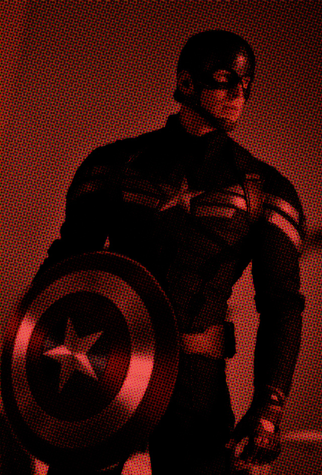
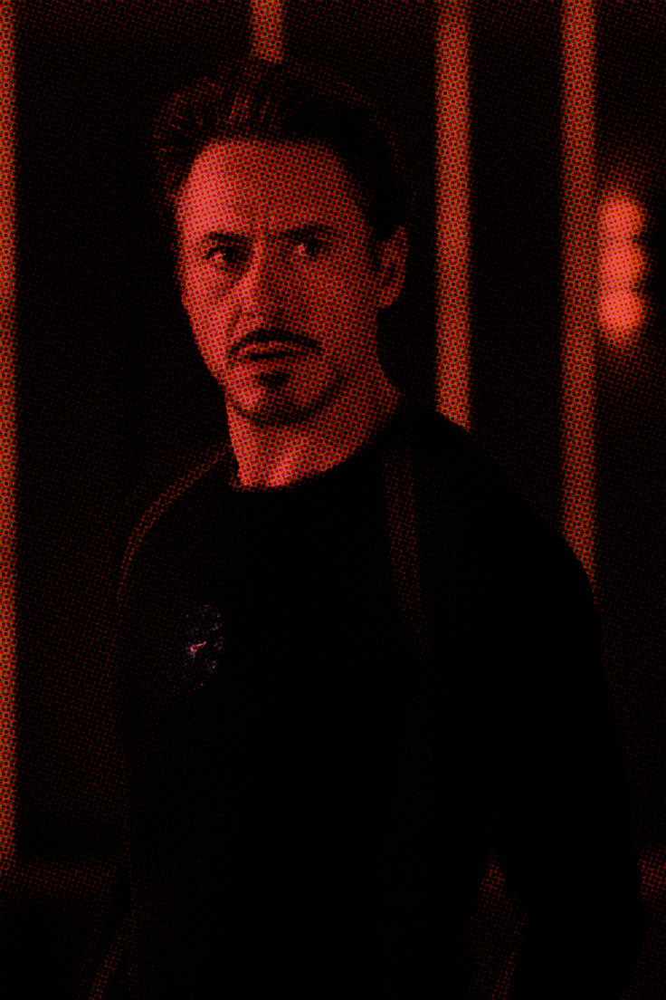
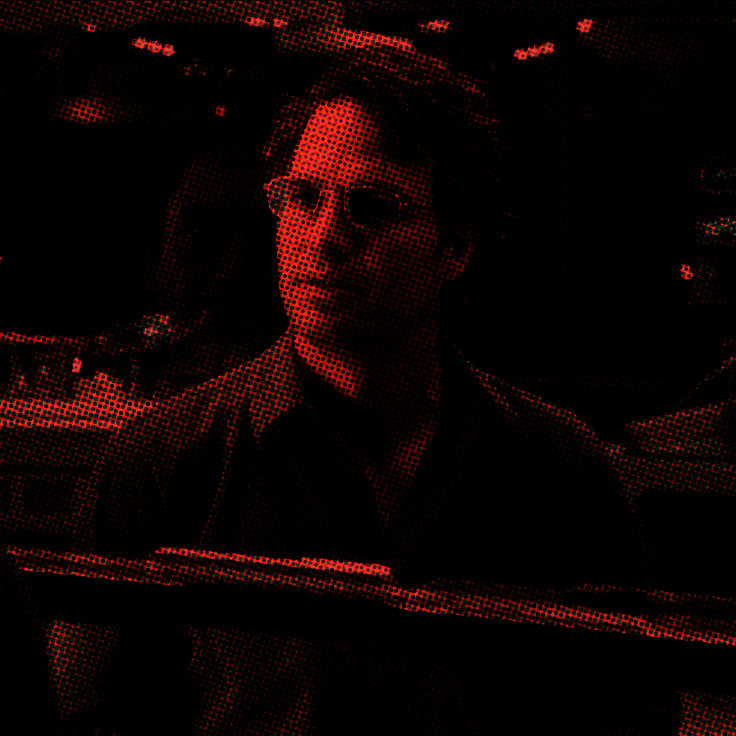

Natasha y clint
Clint Barton, conocido como Hawkeye, fue enviado para eliminar a Natasha durante una de sus misiones. Sin embargo, al conocerla, decidió no cumplir la orden y le ofreció una oportunidad para cambiar de vida. Este encuentro fue fundamental para Natasha, pues Clint se convirtió en una de las personas más importantes de su vida. Entre ambos nació una amistad basada en la confianza, el respeto y la lealtad. Clint no solo le permitió escapar de su antiguo camino, sino que también creyó que podía convertirse en alguien diferente.

Su incorporación a S.H.I.E.L.D
Después de abandonar su pasado como asesina, Natasha se incorporó a S.H.I.E.L.D., una organización internacional dedicada a proteger al mundo de amenazas extraordinarias. Allí comenzó a trabajar en misiones de inteligencia, infiltración y combate. Su experiencia como espía la convirtió en una agente muy valiosa.
Aunque inicialmente algunas personas desconfiaban de ella por su historial, Natasha demostró su compromiso y fue construyendo una nueva identidad lejos de las organizaciones que la habían controlado.
En 2012, Natasha fue convocada para ayudar a reunir a un grupo de personas extraordinarias capaces de enfrentar una amenaza que ponía en peligro a la humanidad. Así se convirtió en una de las integrantes fundadoras de los Vengadores, junto a Iron Man, Capitán América, Thor, Hulk y Hawkeye.
Durante la batalla de Nueva York contra Loki y su ejército, Natasha demostró que no necesitaba tener poderes para luchar junto a los héroes más poderosos del planeta. Su inteligencia, valentía y experiencia fueron fundamentales para el equipo.
  Su participación en los vengadores

Clint
Capitán America
Iron Man
Bruce Banner